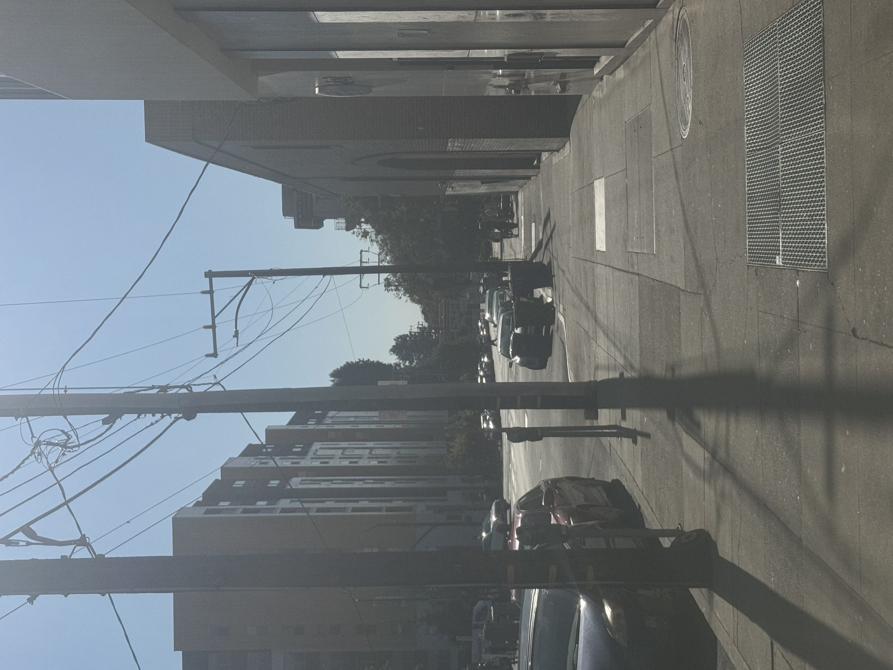
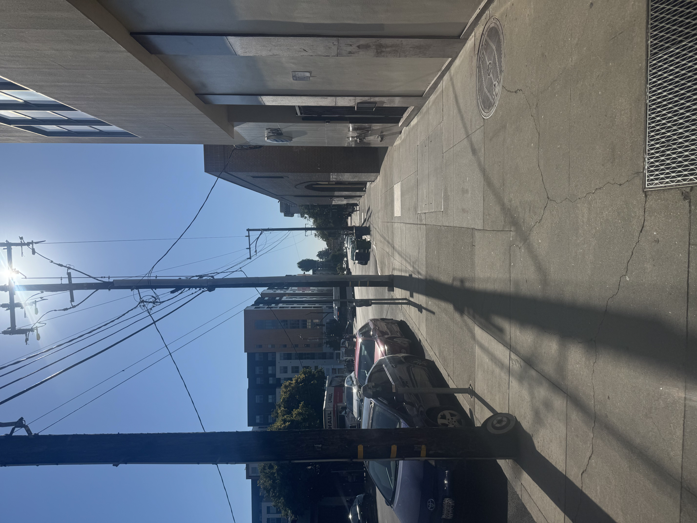
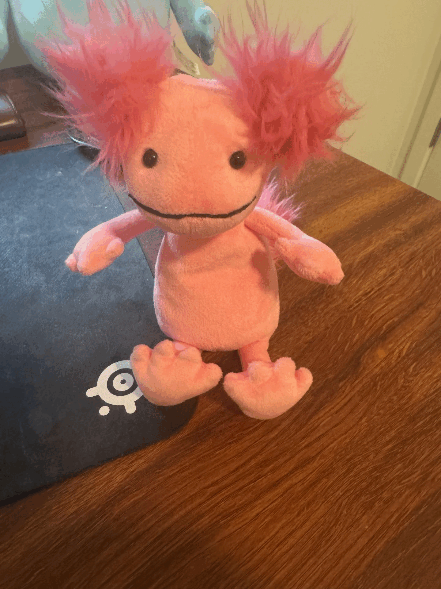

Project 0: Becoming Friends With Your Camera
Part 1: Selfie: The Wrong Way vs. The Right Way
Up close distorted selfie
Further away but zoomed in
Being too close exaggerates the face. Flatten perpsective by stepping back + zooming in
Part 2: Architectural Perspective Compression

Zoomed in + take photo

Walk forward + take photo
Intuition:
Far + zoom in -> longer focal length -> relative depth distances shrink between objects -> flattened/compressed.
Close + not zoomed in -> shorter focal length -> relative depth differences grow larger -> scene looks stretched w/more depth
Part 3: The Dolly Zoom

Intuition:
Dolly in (physically moving closer) + zoom out -> shorter focal length -> background stretches away (depth exaggerated).
Dolly out (physically moving farther away) + zoom in -> longer focal length -> background compresses and looms closer.
Back to CS180
|
Back to Main Portfolio